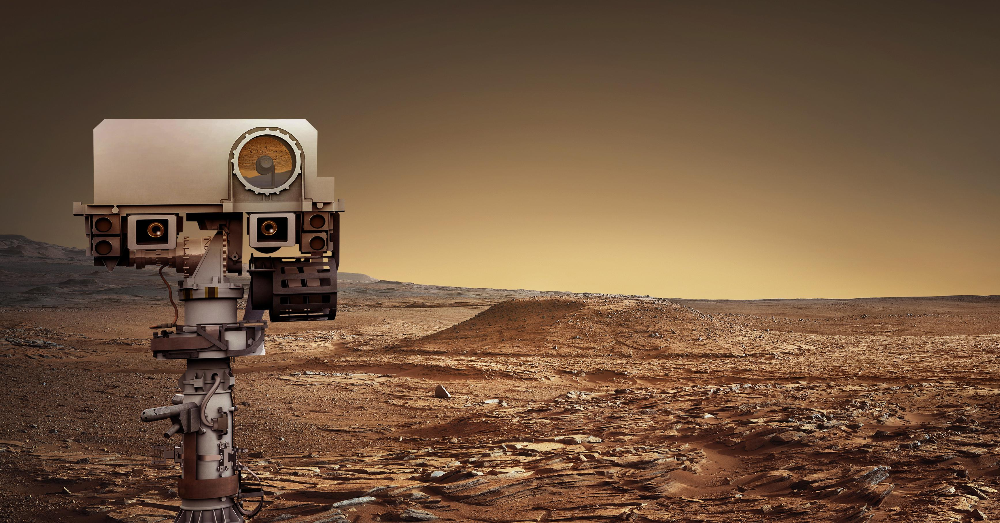
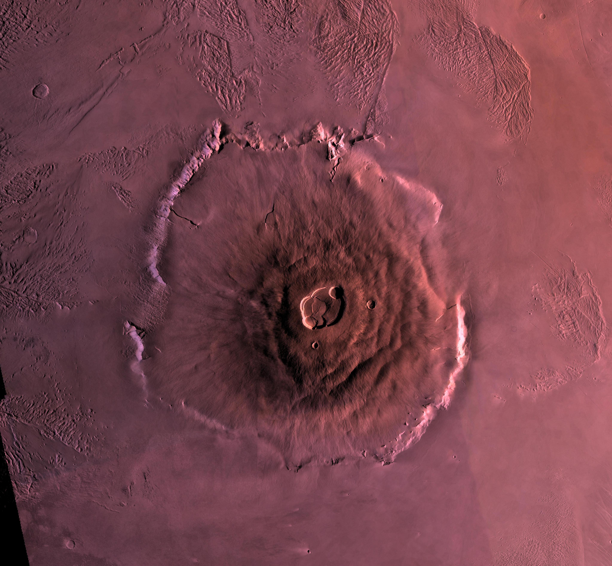
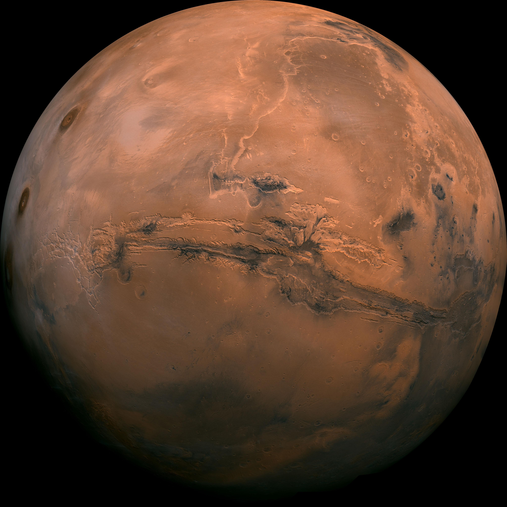
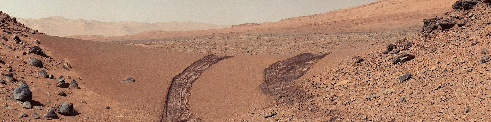
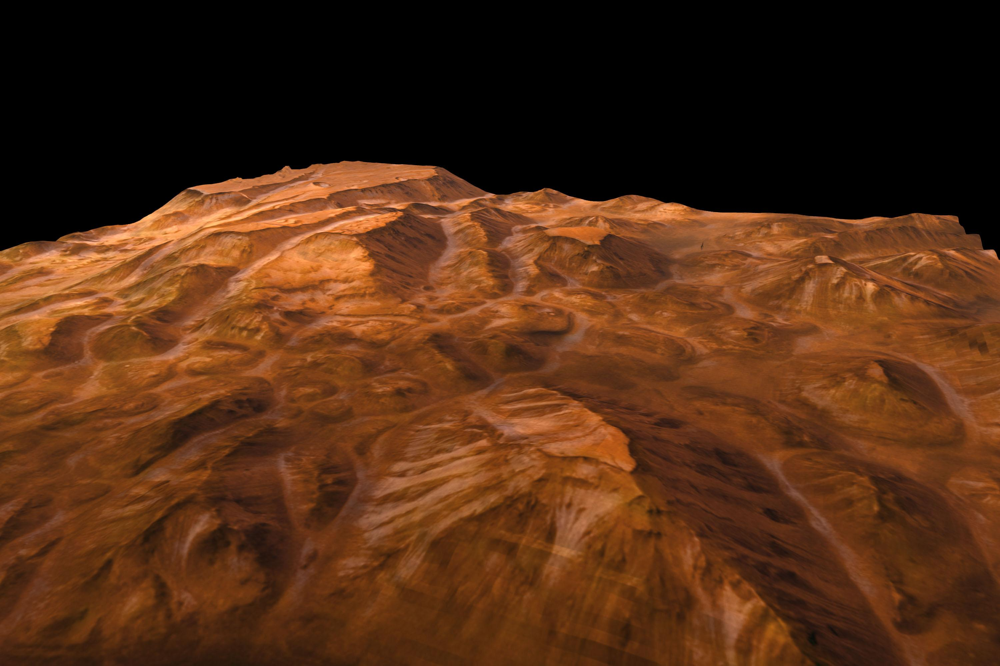

Phobos
Phobos is the larger moon and orbits very close to Mars.
Mars is the fourth planet from the Sun and is often called the “Red Planet” because of its reddish appearance.
Its red color is caused by iron oxide (rust) on its surface. Mars is one of the most studied planets in the solar system because scientists believe it may have once had conditions suitable for life.
Mars is smaller than Earth but shares some similarities such as seasons, polar ice caps, and evidence of ancient water flows.
Discover More ›
Mars — the Red Planet covered in iron-rich dust.

Iron oxide gives Mars its red color.
Mars gets its red color from iron-rich dust that covers its surface. When iron reacts with oxygen, it forms rust, giving the planet its distinct reddish-orange appearance.
This dust is so fine that it can be lifted into the atmosphere, sometimes creating massive dust storms that can cover the entire planet.
Mars has a very thin atmosphere, mostly made of carbon dioxide, which cannot trap heat effectively.
The average temperature on Mars is around -60°C, and it can drop as low as -125°C near the poles. Occasionally, temperatures near the equator can be slightly warmer.
Because the atmosphere is so thin, water cannot exist easily in liquid form, the planet is exposed to radiation, and the weather remains cold and dry.

Mars has a cold, dry climate with a thin atmosphere.

Mars has volcanoes, canyons, and rocky deserts.
Mars has some of the most impressive geological features in the solar system.
Olympus Mons is the largest volcano in the solar system, and Valles Marineris is a massive canyon system stretching thousands of kilometers.
The planet also has rocky deserts, dust-covered plains, and polar ice caps made of water and carbon dioxide ice.
These features suggest that Mars was once more active and may have had flowing water billions of years ago.
Mars is a key target for space missions. Rovers and spacecraft have been sent to explore its surface and search for signs of past life.
Scientists have found evidence of ancient rivers and lakes, minerals that form in the presence of water, and organic molecules.
Although no life has been confirmed, Mars remains one of the most promising places to search for it.

Mars exploration continues through rovers and missions.
Mars has two small moons that are very different from Earth's Moon.
Phobos is the larger moon and orbits very close to Mars.
Deimos is smaller and orbits farther away.
Both moons are irregularly shaped.
They are believed to be captured asteroids.
24.6 hours, very similar to Earth
687 Earth days
Similar to Earth, creating seasons
Mars experiences seasonal changes like Earth
Known as the Red Planet
Rocky surface with dust and iron oxide
Cold and dry climate
Thin carbon dioxide atmosphere
Largest volcano in the solar system
Massive canyons and deserts
Two small moons
Major target for exploration
Mars stands out as the planet most similar to Earth in terms of day length and seasonal changes.
However, it remains cold, dry, and largely lifeless today.
Its history suggests it may have once been warmer and wetter, raising the possibility that life could have existed there in the past.
Because of this, Mars continues to be a major focus for future human exploration and scientific discovery.